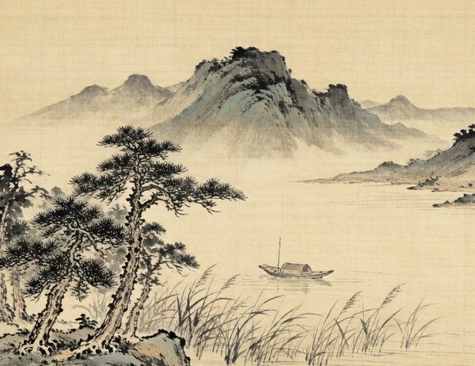

宋词是继唐诗之后中国文学史上的又一座高峰。它是一种合乐歌唱的新体抒情诗，按谱填写，依词牌格律。
北宋前期，柳永发展慢词，扩大词的题材；苏轼"以诗为词"，开豪放派之先；周邦彦集婉约之大成；李清照以女性视角写出千古绝唱。南宋时期，辛弃疾承苏之余绪，将豪放词推至极境，与苏轼合称"苏辛"。
宋词主要分两大流派：婉约派（柳永、李清照、周邦彦）词风清丽柔婉；豪放派（苏轼、辛弃疾、陆游）词风雄浑奔放。两大流派相互辉映，共同构成宋词艺术之瑰丽景观。
↑ 回到顶部